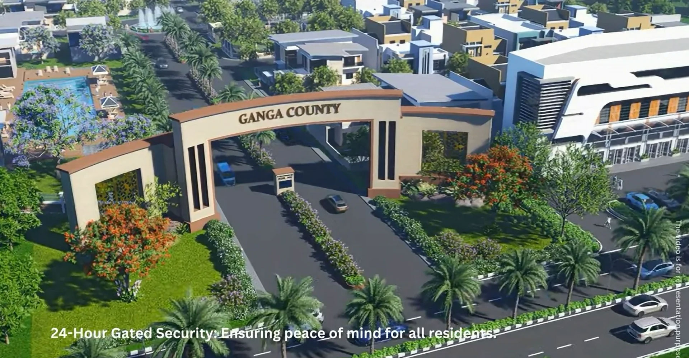
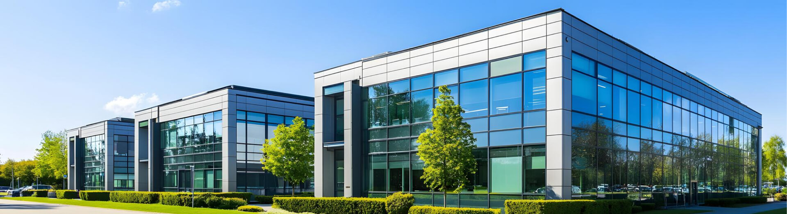

Building Your Dream Weekend Home & Farmhouse Villa in Garhmukteshwar

With modern city lives demanding longer work hours and constant noise in Delhi NCR, families are actively searching for weekend getaways within a comfortable 60 to 90-minute drive. **Garhmukteshwar**, famed for its tranquil banks along the sacred Ganga River (Brij Ghat) and surrounding organic green landscapes, has emerged as the premier weekend villa location.
Instead of spending lakhs every year on short resort stays, smart families are securing permanent physical land at Ganga County—a master-planned, secure gated community offering freehold plots ranging from 150 to 500 Sq. Yd.
Want to tour the township from your device?
Watch our official drone aerial video tour below or request layout plans on the
Master Plan Page.

Table of Contents
1. The 60-Minute Drive from Noida & Delhi NCR
Thanks to smooth multi-lane transit corridors like National Highway 9 (NH-9) and direct links to the Delhi-Meerut & Ganga Expressways, reaching Garhmukteshwar takes roughly an hour from Noida and East Delhi.
This frictionless road trip allows working professionals to effortlessly travel down on Friday evenings and return recharged on Sunday afternoons.

2. Spiritual Serenity & Pollution-Free Clean Air
Garhmukteshwar offers an antidote to urban pollution. Nestled near Brij Ghat and Shri Guru Teg Bahadur Sahib Gurudwara, the township benefits from pure river breezes, expansive green trees, and low AQI levels throughout the year.
- Fresh Environment: Surrounding organic orchards and river basins ensure crisp, fresh air.
- Spiritual Rejuvenation: Easy access to Ganga Aarti and serene morning river walks.
- Low Density Living: Broad 30ft, 40ft, and 60ft wide internal roads prevent overcrowding.
3. Resort-Class Amenities Inside Ganga County
Building a standalone house in an isolated village comes with security concerns and maintenance headaches. Ganga County solves this by providing a fully integrated township environment equipped with:
- 24/7 Gated Security with 2-Tier CCTV surveillance.
- 5-Star Facility Clubhouse with recreational lounges.
- Landscaped Kids Play Parks, Jogging Tracks & Yoga Decks.
- Convenient In-House Commercial Shopping Complex.
Explore all club details on the Amenities Overview.

4. Designing Your Custom Villa or Weekend Farmhouse
Whether you prefer a contemporary glass-facade bungalow, a Mediterranean courtyard villa, or a lush weekend cottage surrounded by fruit trees, plot ownership gives you complete architectural liberty.
Starting at affordable entry-level pricing (~₹17.5 Lakhs onwards), plots are available in 150, 200, 300, and 500 Sq. Yd. configurations. Check specific pricing tiers on the Ganga County Price List.
5. How to Reserve Your Land Parcel
Securing your piece of land at Ganga County involves a transparent, simple process:
- Consult the Location Guide to plan your route for a weekend site visit.
- Pick your preferred plot orientation on the interactive Master Plan map.
- Contact our official site advisors directly at +91-9650655124 or submit a message on our Contact Form.
Official Website Home
View Plot Prices
Project Overview
Location Advantages
Explore Master Plan
Enquire With Sales
Frequently Asked Questions
Can I build my custom bungalow design in Ganga County?
Yes, all plots are freehold residential units where owners can construct custom homes following standard township architectural guidelines.
How far is Brij Ghat Ganga River from the property?
Brij Ghat and the sacred Ganga River banks are located just a few minutes drive away from the main entrance gates.